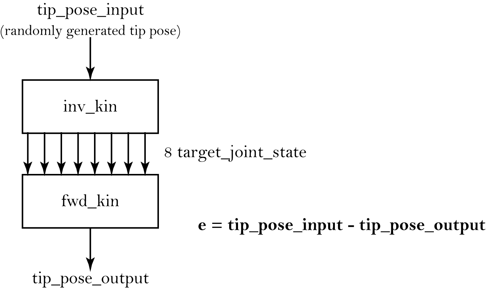

|
universal-robots-kinematics 2.0.0
Forward and inverse kinematics library for Universal Robots (UR3/UR5/UR10) manipulators.
|
|
universal-robots-kinematics 2.0.0
Forward and inverse kinematics library for Universal Robots (UR3/UR5/UR10) manipulators.
|
A C++20 library for forward and inverse kinematics of Universal Robots (UR3/UR5/UR10) manipulators.


This work was developed in the context of our MSc dissertations: A Collaborative Work Cell to Improve Ergonomics and Productivity by João Cunha, and Human-Like Motion Generation through Waypoints for Collaborative Robots in Industry 4.0 by João Pereira, in which we got to work with the collaborative robotic arm UR10 e-series.
Before producing our kinematics solution, we conducted a comprehensive literature review on the UR robots’ kinematics (see docs/REFERENCES.md) and realised there was a lack of thorough and detailed analysis of their kinematics. Additionally, we found the Universal Robots’ documentation confusing and unclear (at that time).
Thus, the main goal of this work is to provide an explicit and transparent guide into the UR robots kinematics (using by reference the UR10 e-series) by expanding on the literature we found and describing every part of our analysis.
We present a forward kinematic solution based on the Modified Denavit-Hartenberg convention and an inverse kinematic solution based on a geometric analysis.
This repository is the C++ library (UR3/UR5/UR10, C++20, CMake). The original MATLAB reference implementation and the CoppeliaSim scenes/models — both with CoppeliaSim integration — now live in a linked archive repository: Jgocunha/universal-robots-kinematics-matlab.
The C++ solution uses C++20 and builds on Windows, Linux, and macOS via CMake.
Instantiate a robot and call forwardKinematics or inverseKinematics:
Supported robot types: URtype::UR3, URtype::UR5, URtype::UR10.
Eigen 3.4.0 is fetched automatically by CMake at configure time — no manual installation required.
GoogleTest v1.15.2 is fetched automatically by CMake at configure time to build the test suite — no manual installation required.
CoppeliaSim integration was removed from this repository. It now lives in the archive repo, Jgocunha/universal-robots-kinematics-matlab.
Requirements: CMake 3.21+ (for presets; the build itself needs 3.20+), a C++20 compiler (GCC 10+, Clang 12+, MSVC 19.29+), Git (Eigen and GoogleTest are fetched from GitHub at configure time).
The build uses CMake presets (debug, release) with the default generator on each platform.
Swap release for debug to build the debug configuration under build/debug.
Coverage (GCC/Clang only, via UR_KINEMATICS_COVERAGE):
Benchmarking consists of:
The solutions were tested for a set of 100000 randomly generated target tip poses (the scripts were run in a Ryzen 5 3600 CPU at 4.28GHz).
MATLAB's compute times are 10x slower than with C++, so the C++ solution is obviously recommended for use.
| MATLAB | C++ | |
|---|---|---|
| Forward Kinematics | 1.832571E-05 | 1.39434e-06 |
| Inverse Kinematics | 1.612797E-04 | 1.07403E-05 |
To compute the average error the following flowchart was followed:

| x | y | z | alpha | beta | gamma | |
|---|---|---|---|---|---|---|
| average error | 7.45E-14 | 1.86E-14 | 7.45E-14 | 4.14E-06 | 4.14E-06 | 4.14E-06 |
Units in: x, y, z metres, alpha, beta, gamma radians.